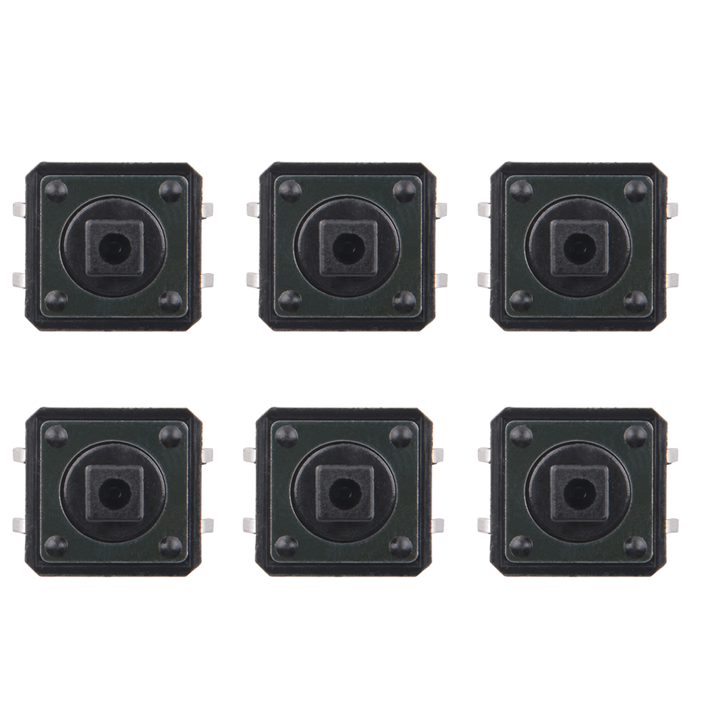
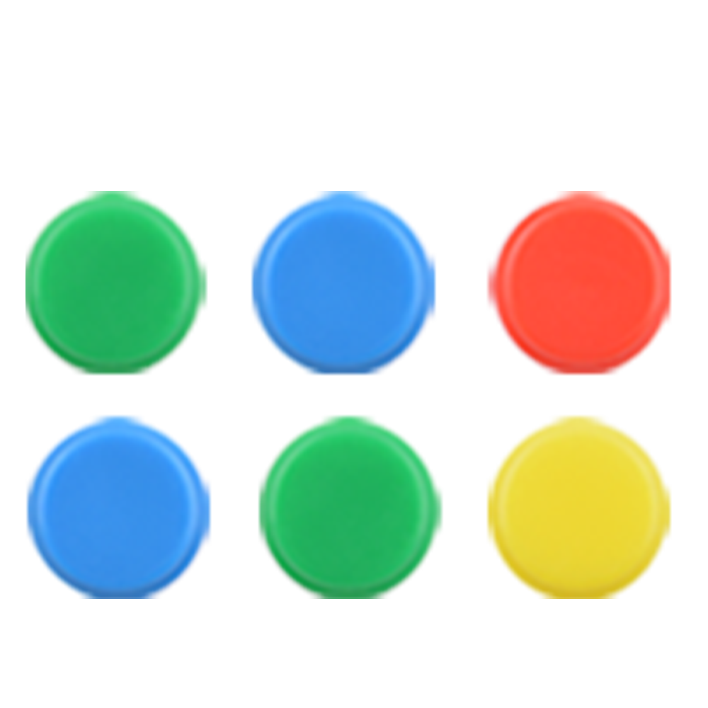

Push Button
A push button, also known as a pushbutton switch, is a type of electrical switch that is operated by pressing it with a finger or thumb. Here are its characteristics, usage methods, and precautions explained in English:
Characteristics of Push Button:
- Mechanical Activation: Push buttons are activated by a mechanical force applied by the user.
- Momentary Action: They are typically momentary switches, meaning they only complete the circuit while being pressed.
- Durability: They are designed to withstand repeated use without failure.
- Variety of Shapes and Sizes: Push buttons come in a range of shapes and sizes to fit various applications.
- Different Colors: They can be found in various colors, often used to indicate the function or status of the switch.
- Multiple Contacts: Some push buttons have multiple contacts for different functions, such as latching or toggling.
Usage Methods:
- Direct Activation: Push buttons are used to directly activate or deactivate a circuit.
- Control Interface: They are commonly used in control panels for machines, appliances, and electronic devices.
- Human-Machine Interaction: In human-machine interfaces, they serve as a simple and intuitive method for user input.
- Safety Mechanisms: In safety circuits, they can be used to initiate emergency stop functions.
- Signal Indication: Some push buttons have built-in LEDs or other indicators to show the status of the device.
Precautions:
- Appropriate Force: Apply the correct amount of force when pressing the button to avoid damage.
- Correct Wiring: Ensure the button is wired correctly according to the circuit diagram to prevent short circuits or malfunctions.
- Environmental Protection: Protect the button from harsh environments that could affect its performance, such as extreme temperatures, moisture, or dust.
- Regular Maintenance: Periodically check the button for wear and replace it if it becomes less responsive or damaged.
- Compliance with Standards: Use push buttons that comply with safety and electrical standards relevant to the application.
- Avoid Overloading: Do not use a push button for a load or voltage beyond its rated specifications.
Push buttons are a simple yet essential component in many electronic and mechanical systems, providing a reliable and user-friendly means of control.
Product Outlook
- Push button

- Push button caps
